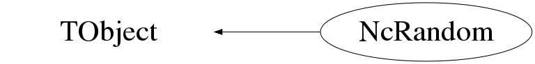

class NcRandom: public TObject
Class NcRandom Generate universal random numbers and sequences on all common machines. Available distributions : Uniform, Gaussian, Poisson and User defined function. In addition this class provides a facility to generate random outcomes of counting experiments belonging to the Bernoulli class B_m. Features : 1) Period = 2**144 2) Same sequence of 24-bit real numbers on all common machines Reference : G.Marsaglia and A.Zaman, FSU-SCRI-87-50, Florida State University, 1987. Coding example : Float_t rndm; // Variable to hold a single random number const Int_t n=1000; Float_t rvec[n]; // Vector to hold n random numbers NcRandom r; // Create a Random object with default sequence rndm=r.Uniform(); // Provide a uniform random number in <0,1> Float_t a=3.; Float_t b=5.; rndm=r.Uniform(a,b); // Provide a uniform random number in <a,b> r.Uniform(rvec,n); // Provide n uniform randoms in <0,1> in rvec r.Uniform(rvec,n,a,b); // Provide n uniform randoms in <a,b> in rvec rndm=r.Gauss(); // Provide a Gaussian random number with // mean=0 and sigma=1 Float_t mean=25.; Float_t sigma=5.; rndm=r.Gauss(mean,sigma); // Provide a Gaussian random number // with specified mean and sigma r.Gauss(rvec,n); // n Gaussian randoms mean=0 sigma=1 r.Gauss(rvec,n,mean,sigma); // n Gaussian randoms with specified // mean and sigma rndm=r.Poisson(mean); // Provide a Poisson random number with // specified mean r.Poisson(rvec,nmean); // n Poisson randoms with specified mean Int_t seed=1837724 NcRandom p(seed); // Create a Random object with specified seed. // The sequence is started from scratch. Int_t cnt1=25; Int_t cnt2=8; NcRandom q(seed,cnt1,cnt2); // Create a Random object with specified seed // The sequence is started at the location // denoted by the counters cnt1 and cnt2. q.Data(); // Print the current seed, cnt1 and cnt2 values. q.GetSeed(); // Provide the current seed value. q.GetCnt1(); // Provide the current cnt1 value. q.GetCnt2(); // Provide the current cnt2 value. Float_t udist(Float_t x) // A user defined distribution { return x*x-4.*x; } Int_t nbins=100; q.SetUser(a,b,nbins,udist); // Initialise generator for udist distribution q.User(); // Provide a random number according to the udist distribution q.User(rvec,n); // Provide n randoms according to the udist distribution Float_t* x=new Float_t[nbins]; Float_t* y=new Float_t[nbins]; ... code to fill x[] and y[] .. NcRandom s; s.SetUser(x,y,nbins); // Initialise generator for (x[i],y[i]) distribution s.User(); // Provide a random number according to the user distribution s.User(rvec,n); // Provide n randoms according to the user distribution Notes : 1) Allowed seed values : 0 <= seed <= 921350143 Default seed = 53310452 2) To ensure a unique sequence for each run, one can automatically construct a seed value by e.g. using the date and time. 3) Using the rvec facility saves a lot of CPU time for large n values. --- Author: Nick van Eijndhoven 11-oct-1997 Utrecht University - Modified: NvE $Date: 2014-10-27 11:13:13 +0100 (Mon, 27 Oct 2014) $ NCFS
Function Members (Methods)
public:
| NcRandom() | |
| NcRandom(const NcRandom&) | |
| NcRandom(Int_t seed, NcTimestamp* ts = 0) | |
| NcRandom(Int_t seed, Int_t cnt1, Int_t cnt2, NcTimestamp* ts = 0) | |
| virtual | ~NcRandom() |
| void | TObject::AbstractMethod(const char* method) const |
| virtual void | TObject::AppendPad(Option_t* option = "") |
| virtual void | TObject::Browse(TBrowser* b) |
| static TClass* | Class() |
| virtual const char* | TObject::ClassName() const |
| virtual void | TObject::Clear(Option_t* = "") |
| virtual TObject* | TObject::Clone(const char* newname = "") const |
| virtual Int_t | TObject::Compare(const TObject* obj) const |
| virtual void | TObject::Copy(TObject& object) const |
| void | Data() const |
| virtual void | TObject::Delete(Option_t* option = "")MENU |
| virtual Int_t | TObject::DistancetoPrimitive(Int_t px, Int_t py) |
| virtual void | TObject::Draw(Option_t* option = "") |
| virtual void | TObject::DrawClass() constMENU |
| virtual TObject* | TObject::DrawClone(Option_t* option = "") constMENU |
| virtual void | TObject::Dump() constMENU |
| virtual void | TObject::Error(const char* method, const char* msgfmt) const |
| virtual void | TObject::Execute(const char* method, const char* params, Int_t* error = 0) |
| virtual void | TObject::Execute(TMethod* method, TObjArray* params, Int_t* error = 0) |
| virtual void | TObject::ExecuteEvent(Int_t event, Int_t px, Int_t py) |
| virtual void | TObject::Fatal(const char* method, const char* msgfmt) const |
| virtual TObject* | TObject::FindObject(const char* name) const |
| virtual TObject* | TObject::FindObject(const TObject* obj) const |
| Float_t | Gauss() |
| Float_t | Gauss(Float_t mean, Float_t sigma) |
| void | Gauss(Float_t* vec, Int_t n) |
| void | Gauss(Float_t* vec, Int_t n, Float_t mean, Float_t sigma) |
| Int_t | GetCnt1() const |
| Int_t | GetCnt2() const |
| virtual Option_t* | TObject::GetDrawOption() const |
| static Long_t | TObject::GetDtorOnly() |
| virtual const char* | TObject::GetIconName() const |
| virtual const char* | TObject::GetName() const |
| virtual char* | TObject::GetObjectInfo(Int_t px, Int_t py) const |
| static Bool_t | TObject::GetObjectStat() |
| virtual Option_t* | TObject::GetOption() const |
| Int_t | GetSeed() const |
| virtual const char* | TObject::GetTitle() const |
| virtual UInt_t | TObject::GetUniqueID() const |
| virtual Bool_t | TObject::HandleTimer(TTimer* timer) |
| virtual ULong_t | TObject::Hash() const |
| virtual void | TObject::Info(const char* method, const char* msgfmt) const |
| virtual Bool_t | TObject::InheritsFrom(const char* classname) const |
| virtual Bool_t | TObject::InheritsFrom(const TClass* cl) const |
| virtual void | TObject::Inspect() constMENU |
| void | TObject::InvertBit(UInt_t f) |
| virtual TClass* | IsA() const |
| virtual Bool_t | TObject::IsEqual(const TObject* obj) const |
| virtual Bool_t | TObject::IsFolder() const |
| Bool_t | TObject::IsOnHeap() const |
| virtual Bool_t | TObject::IsSortable() const |
| Bool_t | TObject::IsZombie() const |
| virtual void | TObject::ls(Option_t* option = "") const |
| void | TObject::MayNotUse(const char* method) const |
| virtual Bool_t | TObject::Notify() |
| void | TObject::Obsolete(const char* method, const char* asOfVers, const char* removedFromVers) const |
| static void | TObject::operator delete(void* ptr) |
| static void | TObject::operator delete(void* ptr, void* vp) |
| static void | TObject::operator delete[](void* ptr) |
| static void | TObject::operator delete[](void* ptr, void* vp) |
| void* | TObject::operator new(size_t sz) |
| void* | TObject::operator new(size_t sz, void* vp) |
| void* | TObject::operator new[](size_t sz) |
| void* | TObject::operator new[](size_t sz, void* vp) |
| NcRandom& | operator=(const NcRandom&) |
| virtual void | TObject::Paint(Option_t* option = "") |
| Float_t | Poisson(Float_t mean) |
| void | Poisson(Float_t* vec, Int_t n, Float_t mean) |
| virtual void | TObject::Pop() |
| virtual void | TObject::Print(Option_t* option = "") const |
| Double_t | RanBm(Double_t nr, Double_t n, Int_t m, Double_t* p = 0, Double_t* na = 0, Double_t* psia = 0, Double_t psi0 = -1, Int_t f = 0, TH1* psih = 0, Int_t ncut = 0, Double_t* nrx = 0) |
| virtual Int_t | TObject::Read(const char* name) |
| virtual void | TObject::RecursiveRemove(TObject* obj) |
| void | TObject::ResetBit(UInt_t f) |
| virtual void | TObject::SaveAs(const char* filename = "", Option_t* option = "") constMENU |
| virtual void | TObject::SavePrimitive(ostream& out, Option_t* option = "") |
| void | TObject::SetBit(UInt_t f) |
| void | TObject::SetBit(UInt_t f, Bool_t set) |
| virtual void | TObject::SetDrawOption(Option_t* option = "")MENU |
| static void | TObject::SetDtorOnly(void* obj) |
| static void | TObject::SetObjectStat(Bool_t stat) |
| virtual void | TObject::SetUniqueID(UInt_t uid) |
| void | SetUser(Float_t* x, Float_t* y, Int_t n) |
| void | SetUser(Float_t a, Float_t b, Int_t n, Float_t (*)(Float_t) f) |
| virtual void | ShowMembers(TMemberInspector&) |
| virtual void | Streamer(TBuffer&) |
| void | StreamerNVirtual(TBuffer& ClassDef_StreamerNVirtual_b) |
| virtual void | TObject::SysError(const char* method, const char* msgfmt) const |
| Bool_t | TObject::TestBit(UInt_t f) const |
| Int_t | TObject::TestBits(UInt_t f) const |
| Float_t | Uniform() |
| Float_t | Uniform(Float_t a, Float_t b) |
| void | Uniform(Float_t* vec, Int_t n) |
| void | Uniform(Float_t* vec, Int_t n, Float_t a, Float_t b) |
| virtual void | TObject::UseCurrentStyle() |
| Float_t | User() |
| void | User(Float_t* vec, Int_t n) |
| virtual void | TObject::Warning(const char* method, const char* msgfmt) const |
| virtual Int_t | TObject::Write(const char* name = 0, Int_t option = 0, Int_t bufsize = 0) |
| virtual Int_t | TObject::Write(const char* name = 0, Int_t option = 0, Int_t bufsize = 0) const |
protected:
| virtual void | TObject::DoError(int level, const char* location, const char* fmt, va_list va) const |
| void | TObject::MakeZombie() |
Data Members
public:
| enum TObject::EStatusBits { | kCanDelete | |
| kMustCleanup | ||
| kObjInCanvas | ||
| kIsReferenced | ||
| kHasUUID | ||
| kCannotPick | ||
| kNoContextMenu | ||
| kInvalidObject | ||
| }; | ||
| enum TObject::[unnamed] { | kIsOnHeap | |
| kNotDeleted | ||
| kZombie | ||
| kBitMask | ||
| kSingleKey | ||
| kOverwrite | ||
| kWriteDelete | ||
| }; |
private:
| Float_t | fC | |
| Float_t | fCd | |
| Int_t | fClip | Indices, seed and counters |
| Float_t | fCm | The Fibonacci parameters |
| Int_t | fCnt1 | |
| Int_t | fCnt2 | |
| Int_t | fI | |
| Int_t* | fIbins | ! The bin numbers of the random x candidates |
| Int_t | fJ | |
| Int_t | fNa | ! The number of bins of the area function |
| Int_t | fSeed | |
| Float_t | fU[97] | |
| Float_t* | fXa | ! The binned x values of the area function |
| Float_t* | fYa | ! The corresponding y values of the area function |
| Float_t | fYamax | ! The min. and max. y values of the area function |
| Float_t | fYamin |
Class Charts
{kind=link}
{kind=link}
{kind=link}
{kind=link}

Function documentation
NcRandom()
Creation of an NcRandom object and default initialisation. The random sequence will be started from scratch. A seed is used to create the initial u[97] table. This seed is converted into four startup parameters i j k and l as outlined in the docs of the internal member function Unpack(). Suggested test values : i=12 j=34 k=56 l=78 (see article) which corresponds to : seed=53310452 This seed value of 53310452 is used in this default initialisation.
NcRandom(Int_t seed, NcTimestamp* ts = 0)
Creation of an NcRandom object and user defined initialisation. The random sequence will be started from scratch. The range of the seed is : 0 <= seed <= 921350143 Note : If seed<0 a unique seed value will be automatically generated based on the provided NcTimestamp and the sequence will be started from scratch. If ts=0 the actual timestamp at the moment of invoking this member function will be used. The seed is created as : seed=10000*(sssss.ss)+dd where "sssss.ss" indicates the fractional second count in the Julian day and "dd" are the 2 last digits of the Julian day count. This will ensure different random sequences for different NcRandom instances that are created at least 0.01 seconds apart, with a negligible probability of repetition after 99 days. Different random sequences are essential to prevent repetition in for instance large batch processing of many Monte Carlo samples. In case the provided seed value exceeds the maximum value of 921350143 the seed will be set to the default value of 53310452. The default value is ts=0.
NcRandom(Int_t seed, Int_t cnt1, Int_t cnt2, NcTimestamp* ts = 0)
Creation of an NcRandom object and user defined initialisation. The random sequence is started from a user defined point specified via "cnt1" and "cnt2" as outlined below. The range of the seed is : 0 <= seed <= 921350143 Note : If seed<0 a unique seed value will be automatically generated based on the provided NcTimestamp and the sequence will be started from scratch. If ts=0 the actual timestamp at the moment of invoking this member function will be used. This means that in case seed<0 both counters cnt1 and cnt2 will be set to zero. The seed is created as : seed=10000*(sssss.ss)+dd where "sssss.ss" indicates the fractional second count in the Julian day and "dd" are the 2 last digits of the Julian day count. This will ensure different random sequences for different NcRandom instances that are created at least 0.01 seconds apart, with a negligible probability of repetition after 99 days. Different random sequences are essential to prevent repetition in for instance large batch processing of many Monte Carlo samples. In case the provided seed value exceeds the maximum value of 921350143 the seed will be set to the default value of 53310452. cnt1 and cnt2 are the parameters for the counting system to enable a start of the sequence at a certain point. The current values of seed, cnt1 and cnt2 can be obtained via the member functions "GetSeed", "GetCnt1" and "GetCnt2" respectively. To start a sequence from scratch one should select : cnt1=0 and cnt2=0. The default value is ts=0.
void Start(Int_t seed, Int_t cnt1, Int_t cnt2, NcTimestamp* ts)
Internal member function to start a certain sequence from scratch or from a user defined point. The algorithm to start from scratch is based on the routine RSTART as described in the report by G.Marsaglia and A.Zaman (FSU-SCRI-87-50 Florida State University 1987). seed is the seed to create the initial u[97] table. This seed is converted into four startup parameters i j k and l as outlined in the docs of the internal member function Unpack(). The range of the seed is : 0 <= seed <= 921350143 Note : If seed<0 a unique seed value will be automatically generated based on the provided NcTimestamp. and the sequence will be started from scratch. If ts=0 the actual timestamp at the moment of invoking this member function will be used. This means that in case seed<0 both counters cnt1 and cnt2 will be set to zero. The seed is created as : seed=10000*(sssss.ss)+dd where "sssss.ss" indicates the fractional second count in the Julian day and "dd" are the 2 last digits of the Julian day count. In this way the automatically generated seed value will always fall in the allowed range. This will ensure different random sequences for different NcRandom instances that are created at least 0.01 seconds apart, with a negligible probability of repetition after 99 days. Different random sequences are essential to prevent repetition in for instance large batch processing of many Monte Carlo samples. Suggested test values : i=12 j=34 k=56 l=78 (see article) which corresponds to : seed=53310452 In case the provided seed value exceeds the maximum value of 921350143 the seed will be set to the default value of 53310452. cnt1 and cnt2 are the parameters for the counting system to enable a start of the sequence at a certain point. The current values of seed, cnt1 and cnt2 can be obtained via the member functions "GetSeed", "GetCnt1" and "GetCnt2" resp. To start from scratch one should select : cnt1=0 and cnt2=0.
void Unpack(Int_t seed, Int_t& i, Int_t& j, Int_t& k, Int_t& l)
Internal member function to unpack the seed into the four startup parameters i,j,k and l. The range of the seed is : 0 <= seed <= 921350143 From the article : The i,j and k values may be chosen in the interval : 1 <= n <= 178 The l value may be in the interval : 0 <= l <= 168 Taking into account the period of the 3-lagged Fibonacci sequence The following "bad" combinations have to be ruled out : i j k l period 1 1 1 X 1 178 1 1 X 4 1 178 1 X 2 1 1 178 X 4 178 178 1 X 4 178 1 178 X 2 1 178 178 X 4 178 178 178 X 1 To rule these "bad" combinations out all together, we choose the following allowed ranges : The i,j and k values may be chosen in the interval : 2 <= n <= 177 The l value may be in the interval : 0 <= l <= 168 and use the formula : seed = (i-2)*176*176*169 + (j-2)*176*169 + (k-2)*169 + l
Float_t Uniform()
Generate uniform random numbers in the interval <0,1> The algorithm is based on lagged Fibonacci sequences (first part) combined with a congruential method (second part) as described in the report by G.Marsaglia and A.Zaman (FSU-SCRI-87-50 Florida State University 1987). Features : 1) Period = 2**144 2) Same sequence of 24-bit real numbers on all common machines
void Uniform(Float_t* vec, Int_t n, Float_t a, Float_t b)
Generate a vector of uniform random numbers in the interval <a,b> This saves lots of (member)function calls in case many random numbers are needed at once. n = The number of random numbers to be generated The algorithm is based on lagged Fibonacci sequences (first part) combined with a congruential method (second part) as described in the report by G.Marsaglia and A.Zaman (FSU-SCRI-87-50 Florida State University 1987). Features : 1) Period = 2**144 2) Same sequence of 24-bit real numbers on all common machines
void Uniform(Float_t* vec, Int_t n)
Generate a vector of uniform random numbers in the interval <0,1> This saves lots of (member)function calls in case many random numbers are needed at once. n = The number of random numbers to be generated
void Uniform(Int_t n)
Internal member function to generate n uniform random numbers in one go.
This saves lots of (member)function calls in case one needs to skip
to a certain point in a sequence.
n = The number of random numbers to be generated
Note : No check is made here to exclude 0 from the range.
It's only the number of generated randoms that counts
The algorithm is based on lagged Fibonacci sequences (first part)
combined with a congruential method (second part)
as described in the report by G.Marsaglia and A.Zaman
(FSU-SCRI-87-50 Florida State University 1987).
Features :
1) Period = 2**144
2) Same sequence of 24-bit real numbers on all common machines
Float_t Gauss(Float_t mean, Float_t sigma)
Generate gaussian distributed random numbers with certain mean and sigma
Method :
P(x) = The gaussian distribution function
--> ln(P) provides an expression for (x-xmean)**2 from which
the following expression for x can be obtained
x = xmean +/- sigma * sqrt(-2*ln(q))
in which q is an expression in terms of pi, sigma and p and lies within
the interval <0,1>.
The gaussian distributed x values are obtained as follows :
1) Two uniform random numbers q1 and q2 in <0,1> are generated.
2) q1 is in fact a uniform generated value for P which is substituted
directly in the formula above.
3) The value of q2 determines whether we use the + or - sign.
void Gauss(Float_t* vec, Int_t n, Float_t mean, Float_t sigma)
Generate a vector of gaussian random numbers with certain mean and sigma This saves lots of (member)function calls in case many random numbers are needed at once. n = The number of random numbers to be generated
void Gauss(Float_t* vec, Int_t n)
Generate a vector of gaussian random numbers with mean=0 and sigma=1 This saves lots of (member)function calls in case many random numbers are needed at once. n = The number of random numbers to be generated
Float_t Poisson(Float_t mean)
Generate Poisson distributed random numbers with certain mean Method : P(n) = exp(-mean)*mean**n/n! is the Poisson distribution function with : n = 0,1,2,3,... and mean > 0 To generate the distribution, the "sum trick" is used as mentioned in "Formulae and Methods in Experimental data Evaluation Vol. 1"
void Poisson(Float_t* vec, Int_t n, Float_t mean)
Generate a vector of Poisson dist. random numbers with certain mean This saves lots of (member)function calls in case many random numbers are needed at once. n = The number of random numbers to be generated Method : P(n) = exp(-mean)*mean**n/n! is the Poisson distribution function with : n = 0,1,2,3,... and mean > 0 To generate the distribution, the "sum trick" is used as mentioned in "Formulae and Methods in Experimental data Evaluation Vol. 1"
void SetUser(Float_t a, Float_t b, Int_t n, Float_t (*)(Float_t) f)
Determine the area under f(x) as a function of x
This is called the "area function" and serves as a basis to
provide random numbers in [a,b] according to the user defined
distribution f(x).
The area function is normalised such that the most extreme
value is 1 or -1.
void SetUser(Float_t* x, Float_t* y, Int_t n)
Determine the area under y[i] as a function of x[i]
This is called the "area function" and serves as a basis to
provide random numbers in x according to the user provided
distribution (x[i],y[i]).
The area function is normalised such that the most extreme
value is 1 or -1.
Float_t User()
Provide a random number according to the user defined distribution Method : Select by a uniform random number a certain area fraction (from fYa[]) of the area function. The required random number is given by the corresponding x value (fXa[]) of the area function. In case of more than one x value candidate, select randomly one of them.
void User(Float_t* vec, Int_t n)
Generate a vector of random numbers according to a user defined dist. This saves lots of (member)function calls in case many random numbers are needed at once. n = The number of random numbers to be generated Method : Select by a uniform random number a certain area fraction (from fYa[]) of the area function. The required random number is given by the corresponding x value (fXa[]) of the area function. In case of more than one x value candidate, select randomly one of them.
Double_t RanBm(Double_t nr, Double_t n, Int_t m, Double_t* p = 0, Double_t* na = 0, Double_t* psia = 0, Double_t psi0 = -1, Int_t f = 0, TH1* psih = 0, Int_t ncut = 0, Double_t* nrx = 0)
Perform "nr" repetitions (and provide the corresponding statistics) of a counting experiment corresponding to a Bernoulli class hypothesis B_m with "n" independent random trials. The hypothesis B_m represents a counting experiment with m different possible outcomes and is completely defined by the probabilities of the various outcomes (and the requirement that the sum of all these probabilities equals 1). The Psi value of n trials of B_m provides (in dB scale) the amount of support that the data can maximally give to any Bernoulli class hypothesis different from the currently specified B_m. To be specific : Psi=-10*log[p(D|B_m I)] where p(D|B_m I) represents the likelihood of the data D under the condition that B_m and some prior I are true. A Psi value of zero indicates a perfect match between the observations and the specified hypothesis. Further mathematical details can be found in the publication N. van Eijndhoven, Astropart. Phys. 28 (2008) 540 (astro-ph/0702029). The arguments of this memberfunction : nr : The number of repetitions (see note 4) of the counting experiment with n independent random trials. n : The number of independent random trials of each counting experiment (see note 1). m : The number of different possible outcomes of the counting experiment. p : The probabilities of the different outcomes according to the hypothesis. na : Array with the signal c.q. (cumulative) observed numbers of occurrences of the different outcomes. psia : Array of observed "nr" (see notes 2 and 4) psi values. psi0 : A user specified threshold psi value to provide P-value statistics. f : Flag to indicate the use of a frequentist (Stirling) approximation (f=1) or the exact Bayesian expression (f=0). psih : Histogram with observed psi values (see notes 2 and 4). ncut : Number of psi>=psi0 values to be obtained to trigger an (early stop) of the number of repetitions (see note 4). In case ncut=0 all the specified "nr" repetitions will be performed. nrx : Returned number of actually performed repetitions (only if a non-zero "nrx" value is provided on input) Notes : 1) When provided, the array "na" may be used to retrieve the (cumulative) observed numbers of occurrences of the different outcomes, but also to specify a specific configuration representing a signal on invokation of this memberfunction. In case "na" is used to specify a specific signal configuration, the number of independent random B_m (background) trials "n" has to be entered as a negative number. This is meant as a safety measure to prevent unintended signal configurations in case one only wants to use "na" to retrieve statistics, but omitted to set all the "na" elements explicitly to zero before invoking this memberfunction. A provided signal configuration will be stored internally and after taking the "n" independent random (background) trials, the signal configuration will be superimposed "as is" on the resulting outcome of each B_m repetition. So, the signal configuration itself will not be randomised. This will allow investigation of the sensitivity for various signal configurations superimposed on a randomised background of "n" observations. After the randomisation procedure, the array "na" will contain the (cumulative) statistics of the observations of the signal configuration and the randomised background. Obviously, in the case of a specified signal configuration all returned statistics will be determined for the total number of "n+nsig" trials. 2) When provided, the arrays "na" and "p" should be of dimension "m", whereas the array "psia" should be of dimension "nr". An alternative way of retrieving the observed psi values is via the user defined histogram "psih", which obviously is more convenient than the array "psia" in the case of a large number of repetitions "nr". Note : Retrieval of psi values via "psia" and "psih" can be used simultaneously. 3) The number of repetitions "nr", random trials "n" and the observed numbers of occurrences of the different outcomes c.q. signal configuration "na" are of type "double" to allow for large numbers. Obviously all these variables are meant to represent only integer counts. 4) In case a non-zero input argument "ncut" is provided, the number of repetitions will be stopped as soon as "ncut" values of psi>=psi0 are obtained. When a large number of repetitions "nr" was specified, this allows an "early stop" and as such a significant reduction of the CPU time. In case the number "ncut" was not reached, the repetition of the counting experiment wil stop as soon as "nr" repetitions have been performed. However, when nr=0 was specified the counting experiment will be repeated until the number "ncut" is reached or when the number of repetitions has reached the maximum allowed value of 1e19. In case a non-zero input argument "nrx" is provided the number of actually performed repetitions will be returned via this same argument "nrx". For practical reasons the maximum values of "nr" and "n" have been limited to 1e19, which is about the corresponding maximum value of an unsigned 64-bit integer. In case no probabilities are given (i.e. p=0), a uniform distribution is assumed. In case the other arrays or histogram are not specified (i.e. 0), the corresponding statistics are not returned. The default values are p=0, na=0, psia=0, psi0=-1, f=0, psih=0, ncut=0 and nrx=0. The return value : In case nr=1, the corresponding Psi value of that single random experiment is returned. In case nr>1 (or nr=0) and psi0<0, the minimal encountered Psi value is returned. In case nr>1 (or nr=0) and psi0>=0, the number of encountered Psi values with Psi>=psi0 is returned. In the case of inconsistent input, a value of -1 is returned. --- NvE 16-nov-2008 NCFS
NcRandom()